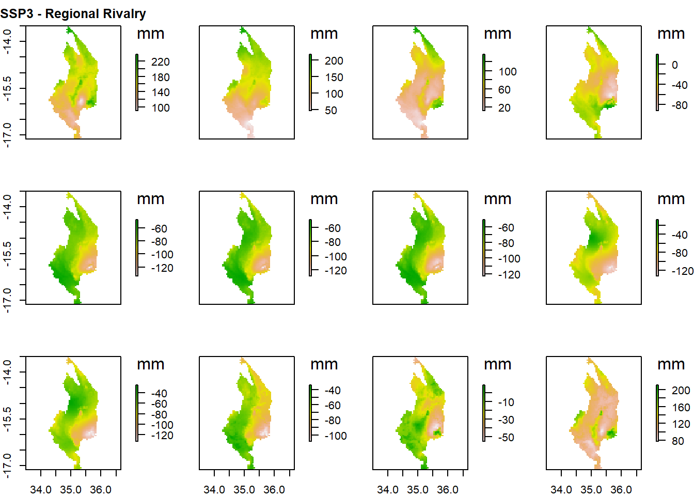
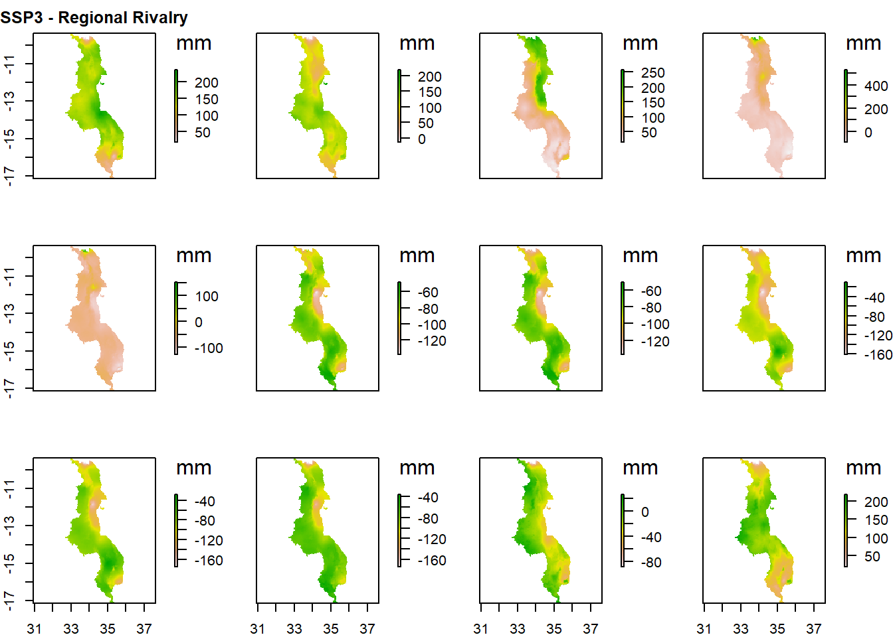
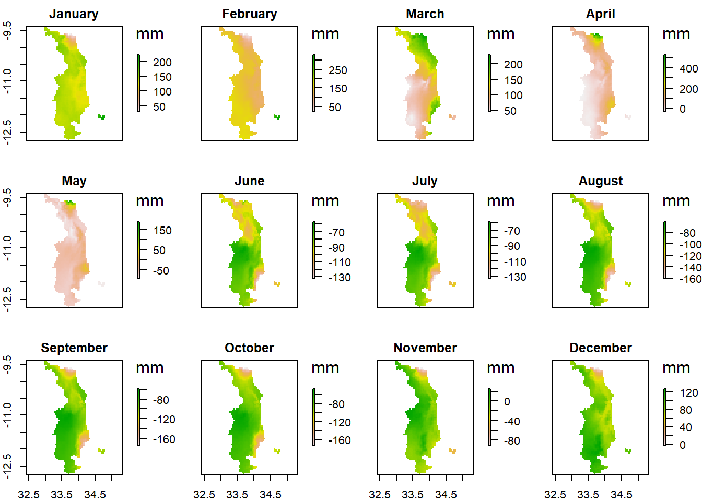

Malawi Climate Data
2022-03-14
Chapter 1 Climate data
1.2 Climate Projections - based on SSPs
1.2.1 Mean Temperature change 2021-2040 based on climatological mean 1971-2000
National
Scenario: SSP1 - Sustainability Scenario: SSP2 - Middle of the Road
Scenario: SSP3 - Regional Rivalry Scenario: SSP5 - Fossil-fueled Development Northern Malawi
Scenario: SSP1 - Sustainability Scenario: SSP2 - Middle of the Road Scenario: SSP3 - Regional Rivalry
Scenario: SSP5 - Fossil-fueled Development
Central Malawi
Scenario: SSP1 - Sustainability Scenario: SSP2 - Middle of the Road Scenario: SSP3 - Regional Rivalry Scenario: SSP5 - Fossil-fueled Development Southern Malawi
Scenario: SSP1 - Sustainability
Scenario: SSP2 - Middle of the Road Scenario: SSP3 - Regional Rivalry Scenario: SSP5 - Fossil-fueled Development1.2.2 Precipitation change 2021-2040 based on climatologial period 1971-2000
National
Scenario: SSP1 - Sustainability Scenario: SSP2 - Middle of the Road
Scenario: SSP3 - Regional Rivarly Scenario: SSP5 - Fossil-fueled Development Nothern Malawi
Scenario: SSP1 - Sustainability Scenario: SSP2 - Middle of the Road Scenario: SSP3 - Regional Rivarly Scenario: SSP5 - Fossil-fueled Development Central Malawi
Scenario: SSP1 - Sustainability Scenario: SSP2 - Middle of the Road
Scenario: SSP3 - Regional Rivarly Scenario: SSP5 - Fossil-fueled Development Southern Malawi
Scenario: SSP1 - Sustainability
Scenario: SSP2 - Middle of the Road Scenario: SSP3 - Regional Rivarly
Scenario: SSP5 - Fossil-fueled Development1.2.3 Mean Temperature change 2041-2060 based on climatological mean 1971-2000
National
Scenario: SSP1 - Sustainability Scenario: SSP2 - Middle of the Road
Scenario: SSP3 - Regional Rivalry Scenario: SSP5 - Fossil-fueled Development
Northern Malawi
Scenario: SSP1 - Sustainability
Scenario: SSP2 - Middle of the Road Scenario: SSP3 - Regional Rivalry
Scenario: SSP5 - Fossil-fueled Development
Central Malawi
Scenario: SSP1 - Sustainability Scenario: SSP2 - Middle of the Road Scenario: SSP3 - Regional Rivalry Scenario: SSP5 - Fossil-fueled Development Southern Malawi
Scenario: SSP1 - Sustainability Scenario: SSP2 - Middle of the Road Scenario: SSP3 - Regional Rivalry
Scenario: SSP5 - Fossil-fueled Development
1.2.4 Precipitation change 2041-2060 based on climatologial period 1971-2000
National
Scenario: SSP1 - Sustainability Scenario: SSP2 - Middle of the Road Scenario: SSP3 - Regional Rivarly
Scenario: SSP5 - Fossil-fueled Development Nothern Malawi
Scenario: SSP1 - Sustainability Scenario: SSP2 - Middle of the Road
Scenario: SSP3 - Regional Rivarly Scenario: SSP5 - Fossil-fueled Development Central Malawi
Scenario: SSP1 - Sustainability Scenario: SSP2 - Middle of the Road Scenario: SSP3 - Regional Rivarly Scenario: SSP5 - Fossil-fueled Development Southern Malawi
Scenario: SSP1 - Sustainability Scenario: SSP2 - Middle of the Road Scenario: SSP3 - Regional Rivarly Scenario: SSP5 - Fossil-fueled Development